Cover, Preface, Acknowledgment, Contents, and Plate Index
Page 1

WICA SIIC SIXTH EDITION NATIONAL COMMERCIAL INSULATION STANDARDS nuca NIA PUBI iSHED BY MIDWEST INSULATION CONTRACTORSA 16712 ELM CIRPLE, OMAHA.
NEBRASKA 6810 1-402-342-3463 FAX' 402-330- e-mail: www.mcainsuiai'q•, NATIONAL ATION ASSOCIATION opeCi"CAnoe€ Steenoe• æE-NSED ARCOM
Page 2
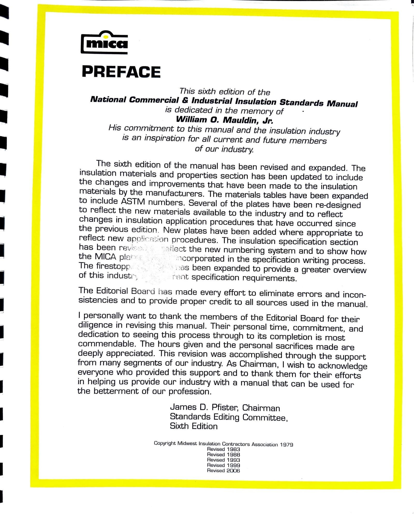
m•ca PREFACE This sixth edition of the National Commercial & Industrial Insulation Standards Manual is dedicated in the memory of William O.
Mauldin, Jr.
His commitment to this manual and the insulation industry is an inspiration for all current and future members of our industry.
The sixth edition of the manual has been revised and expanded.
The insulation materials and properties section has been updated to include the changes and improvements that have been made to the insulation materials by the manufacturers.
The materials tables have been expanded to include ASTM numbers.
Several of the plates have been re-designed to reflect the new materials available to the industry and to reflect changes in insulation application procedures that have occurred since the previous edition.
New plates have been added where appropriate to reflect new procedures.
The insulation specification section has been the MICA plat The firestopp of this the new numbering system and to show how •corporated in the specification writing process.
, as been expanded to provide a greater overview r ergt specification requirements.
The Editorial Board has made every effort to eliminate errors and incon- sistencies and to provide proper credit to all sources used in the manual.
I personally want to thank the members of the Editorial Board for their diligence in revising this manual.
Their personal time, commitment, and dedication to seeing this process through to its completion is most commendable.
The hours given and the personal sacrifices made are deeply appreciated.
This revision was accomplished through the support from many segments of our industry.
As Chairman, I wish to acknowledge everyone who provided this support and to thank them for their efforts in helping us provide our industry with a manual that can be used for the betterment of our profession.
James D.
Pfister, Chairman Standards Editing Committee, Sixth Edition Copyright Midwest Insulation Contractors Association 1979 Revised 1983 Revised 1988 Rev,sed 1993 Revised 1999 Revised 2006
Page 3
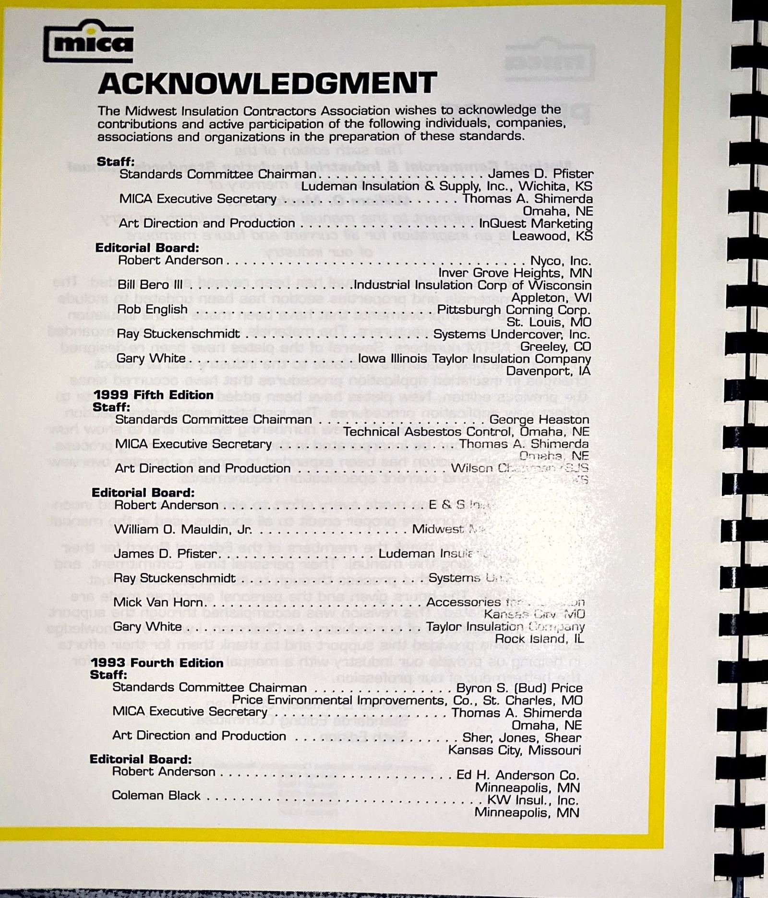
muca ACKNOWLEDGMENT The Midwest Insulation Contractors Association wishes to acknowledge the contributions and active participation of the following individuals, companies.
associations and organizations in the preparation of these standards.
Staff: Standards Committee Chairman.
.
James D.
Pfister Ludeman Insulation & Supply, Inc., Wichita, KS MICA Executive Secretary Art Direction and Production .
Editorial Board: Robert Anderson .
.
Bill Bero Ill Rob English Ray Stuckenschmidt Gary White 1999 Fifth Edition Staff: Standards Committee Chairman .
MICA Executive Secretary Art Direction and Production Editorial Board: Robert Anderson .
.
.
.
.
.
.
.
.
.
.
.
.
William O.
Mauldin, Jr.
James D.
Pfister.
Ray Stuckenschmidt .
Mick Van Horn.
.
Gary White 1993 Fourth Edition Staff: Standards Committee Chairman .
Thomas A.
Shimerda Omaha.
NE InQuest Marketin Leawood, Kg Nyco.
Inc.
Inver Grove Heights, MN .lndusü•ial Insulation Corp of Wisconsin Appleton, WI Pittsburgh Corning Corp.
St.
Louis, MO Systems Undercover, Inc.
Greeley, CO Iowa Illinois Taylor Insulation Company Davenport, IA George Heaston Technical Asbestos Control, Omaha, NE Thomas A.
Shimerda Wilscn Midwest Ludeman Insu:cc Systems .
- Accessories t:-r .
Kar'sar; tv'iO Taylor Insulation Rock Island, IL Byron S.
(Bud) Price Price Environmental Improvements, Co., St.
Charles, MO MICA Executive Secretary Art Direction and Production Editorial Board: Robert Anderson .
.
.
.
.
.
Coleman Black Thomas A.
Shimerda Omaha, NE Sher, Jones, Shear Kansas City, Missouri Ed H.
Anderson Co.
Minneapolis, MN KW Insul., Inc.
Minneapolis, MN
Page 4
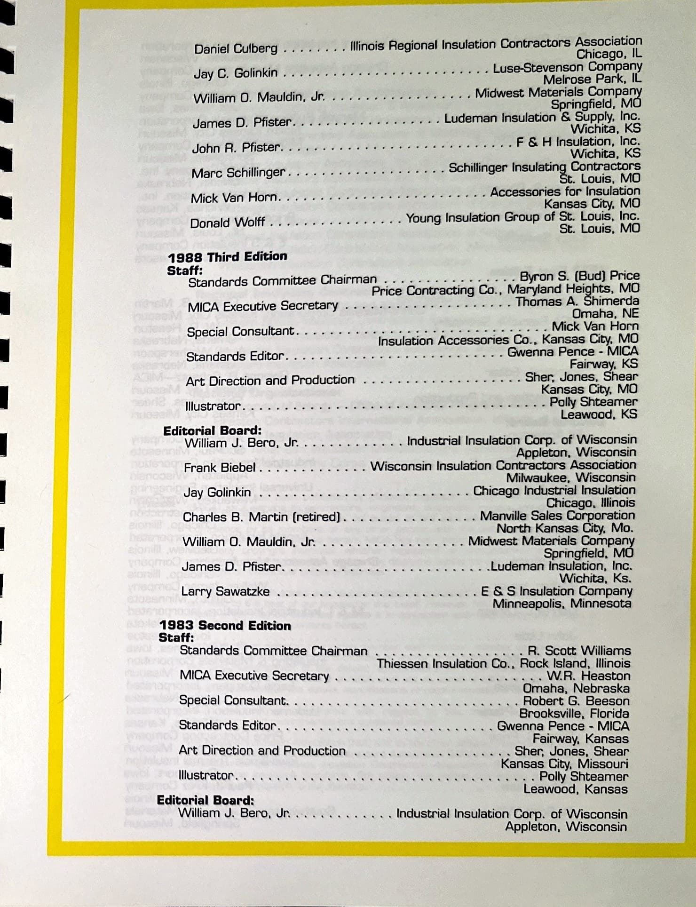
Daniel Culberg Jay C.
Golinkin William O.
Mauldin, Jr James D.
Pfister.
John R.
Pfister....
Marc Schillinger.
Mick Van Horn.
Donald Wolff 1988 Third Edition Staff: .
Illinois Regional Insulation Contractors Association Chicago, IL Luse-Stevenson Company Melrose Park, IL Midwest Materials Company Springfield, MO Ludeman Insulation & Supply, Inc.
W,chita, KS F & H Insulation.
Inc.
Wichita.
KS Schillinger Insulatina Contractors St.
Louis, MO Accessories for Insulation Kansas City, MO Young Insulation Group of St.
Louis.
Inc.
St.
Louis, MO Byron S.
(Bud) Price Standards Commitee Chairman MICA Executive Secretary Special Consultant.
Standards Editor..
Art Direction and Production Illustrator....
Editorial Board: William J.
Bero, Jr.
.
Frank Biebel .
Jay Golinkin Charles B.
Martin (retired) .
William O.
Mauldin, Jr.
James D.
Pfister..
Larry Sawatzke 1983 Second Edition Staff: Standards Committee Chairman MICA Executive Secretary Special Consultant..
Standards Editor.
Art Direction and Production Illustrator Editorial Board: William J.
Bero, Jr.
.
Price Contracting Co., Maryland Heiahts, MO Thomas A.
Shimerda Omaha, NE Mick Van Horn Insulation Accessories Co..
Kansas City.
MO Gwenna Pence - MICA Fairway, KS Sher.
Jones, Shear Kansas City, MO Polly Shteamer Leawood.
KS Industrial Insulation Corp.
of Wisconsin Appleton.
Wisconsin Wisconsin Insulation Contractors Association Milwaukee.
Wisconsin Chicago Industrial Insulation Chicago, Illinois Manville Sales Corporation North Kansas City.
Mo.
Midwest Materials Company Springfield, MO .Ludeman Insulation, Inc.
Wichita.
KS.
E & S Insulation Company Minneapolis, Minnesota R.
Scott Williams Thiessen Insulation Co..
Rock Island, Illinois W.R.
Heaston Omaha.
Nebraska Robert G.
Beeson Brooksville.
Florida Gwenna Pence - MICA Fairway, Kansas Sher, Jones.
Shear Kansas City.
Missouri Polly Shteamer Leawood.
Kansas Industrial Insulation Corp.
of Wisconsin Appleton, Wisconsin
Page 5
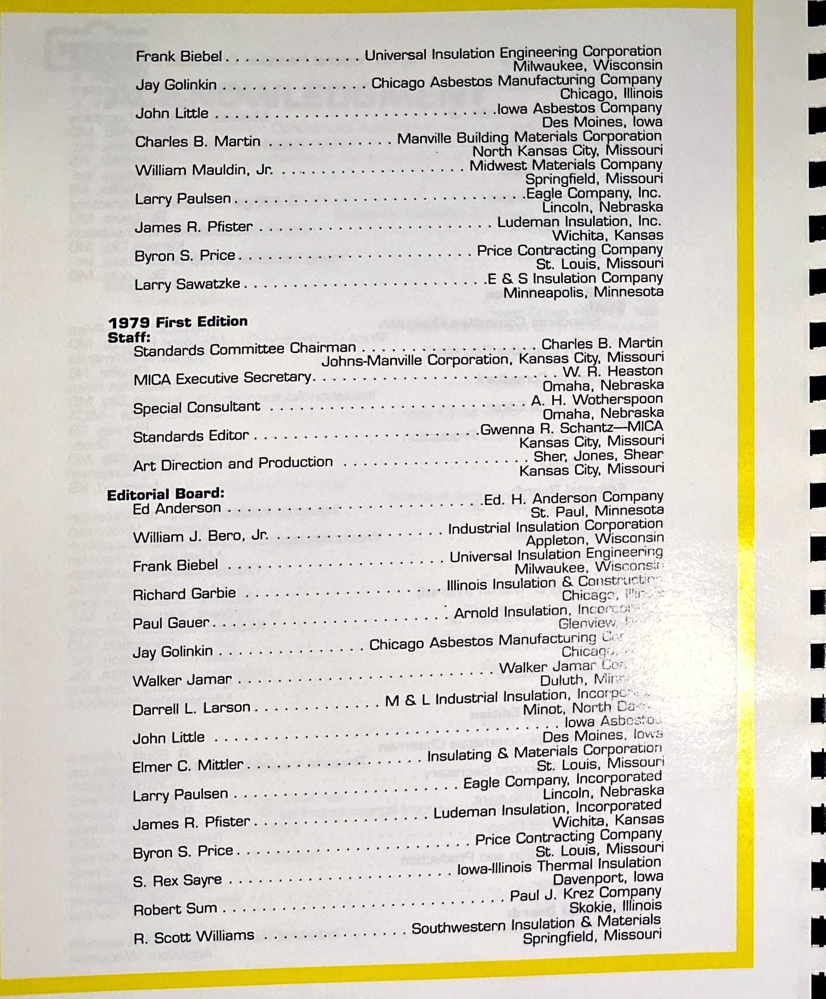
Frank Biebel .
.
Jay Golinkin .
John I-iWe Charles B.
Martin William Mauldin, Jr.
Larry Paulsen .
.
James R.
Pfister .
Byron S.
Price.
.
Larry Sawatzke .
1979 First Edition Staff: Universal Insulation Engineering Corporation Milwaukee, Wisconsin Chicago Asbestos Manufacturing Company Chicago.
Illinois .10wa Asbestos Company Des Moines.
Iowa Manville Building Materials Corporation North Kansas City, Missouri Midwest Materials Company Springfield, Missouri Eagle Company.
Inc.
Lincoln, Nebraska Ludeman Insulation.
Inc.
Wichita.
Kansas Price Contracting Company St.
Louis, Missouri .E & S Insulation Company Minneapolis, Minnesota Charles B.
Martin Standards Committee Chairman .
Johns-Manville Corporation, Kansas City.
Missouri MICA Executive Secretary.
Special Consultant Standards Editor .
Art Direction and Production Editorial Board: Ed Anderson .
William J.
Bero, Jr.
Frank Biebel Richard Garbie Paul Gauer.
.
Jay Golinkin Walker Jamar .
Darrell L.
Larson .
John Little Elmer C.
Mittler .
Larry Paulsen .
James R.
Pfister .
Byron S.
Price .
.
S.
Rex Sayre Robert Sum .
R.
Scott Williams W.
R.
Heaston Omaha, Nebraska A.
H.
Wotherspoon Omaha, Nebraska .Gwenna R.
Schantz—MICA Kansas City, Missouri Sher, Jones, Shear Kansas City, Missouri Ed.
H.
Anderson Company St.
Paul.
Minnesota Industrial Insulation Corporation Appleton.
Wisconsin Universal Insulation Engineering Milwaukee, Illinois Insulation & Chicagc.
Arnold Insulation, • Glenview Chicago Asbestos Manufacturing Chicaqö„ • Walker Jamar I -;c«, Duluth, M & L Industrial Insulation, Incorpc Minot, North Cao Iowa Des Moines, lovv.3 Insulating & Materials Corporation St.
Louis, Missouri Eagle Company, Incorporated Lincoln, Nebraska Ludeman Insulation, Incorporated Wichita, Kansas Price Contracting Company St.
Louis, Missouri Iowa-Illinois Thermal Insulation Davenport, Iowa Paul J.
Krez Company Skokie, Illinois Southwestern Insulation & Materials Springfield, Missouri
Page 6
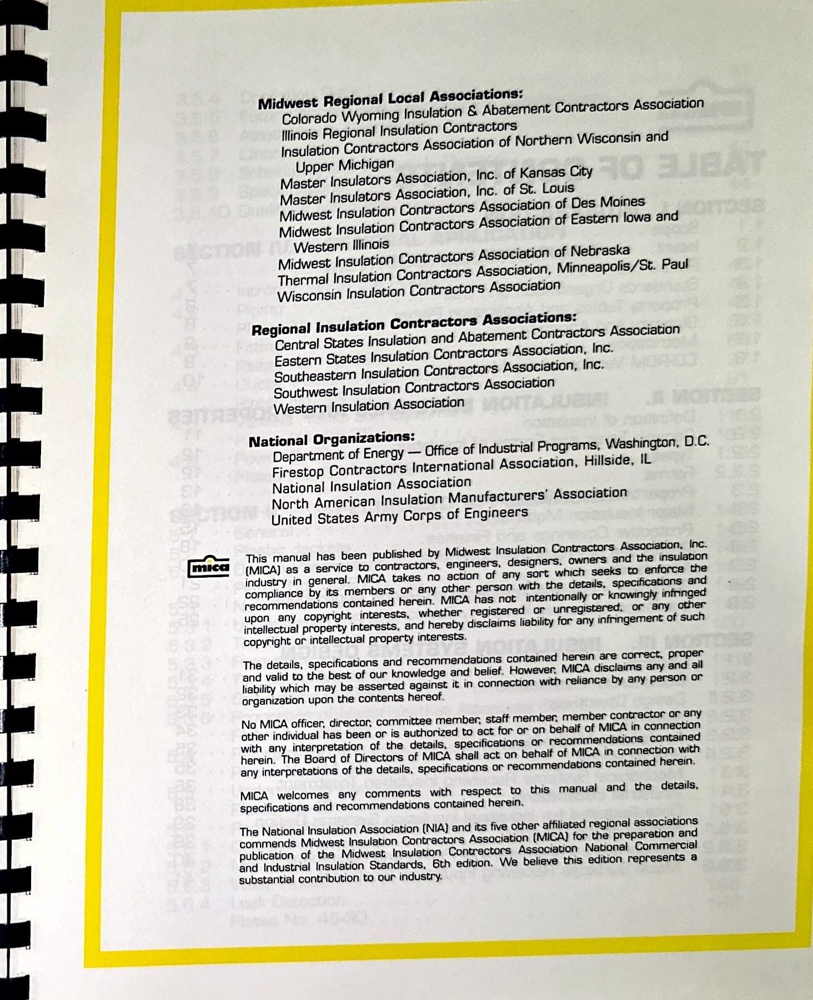
Midwest Regional Local Associations: Colorado Wyoming Insulation & Abatement Corü•actors Association Illinois Regional Insulation Contractors Insulation Contractors Association of Northern Wisconsin and Upper Michigan Master Insulators Association, Inc.
of Kansas City Master Insulators Association, Inc.
of St.
Louis Midwest Insulation Contractors Association of Des Moines Midwest Insulation Contractors Association of Eastern Iowa and Western Illinois Midwest Insulation Contractors Association of Nebraska Thermal Insulation Contractors Assoaaoon, Minneapofis/St.
Paul Wisconsin Insulation Contractors Association Regional Insulation Contractors Associations: Central States Insulation and Abatement Contractors Associabon Eastern States Insulation Contractors Association, Inc.
Southeastern Insulation Contractors Association, Inc.
Southwest Insulation Contractors Assoaauon Western Insulation Association National Organizations: Department of Energy — Office of Industrtal Programs.
Washington, D.C.
Firestop Contractors International Association, Hillside, IL National Insulation Association North American Insulation Manufacturers' Association United States Army Corps of Engineers This manual has been published by Mdwest Insulaaon Cana-actors Assoaaoon, Inc.
(MICA) as a service to contractors, engneers.
designers.
owners and the Insulaaon induswy •n general.
MCA takes no acuon of any sort which seeks to enforce he compliance by Its members or any other person With tre detads.
specftaaons and recommendations contained heren MICA has not Intentionally knowtngiy Infrtnged upon any copynght Interests.
whether registered or unregsæred.
any intellectual property Interests.
and hereby disclaims liability for any tnfnngement of such copyright or Intellectual property Interests.
The details.
specjficauons and recommendations contained heretn correct.
pmper and valid to the best of our knowledge and belief.
However.
MCA cfiscla.ms and all habiliW which may be asserted against it tn connecaon With reliance by any person or organization upon the contents hereof No MICA officer.
director.
committee member.
staff member.
member conu•actor or any other indMdual has been or is authorized to act for or on behalf of Mu jn connecuon With any interpretation of the details.
specificauons or recornmendations conta.ned herein.
The Board of Directors of MICA shall act on behalf of MICA In connecuon With any interpretations of the details.
specificauons or recommendaoons contained heretn.
MICA welcomes any comments with respect to this manual and the detads.
specifications and recommendations contained herein.
The National Insulation Association (NIA) and its five other affiliated regional associations commends Midwest Insulation Contractors Assoctaoon (MICA) for the preparation and publication of the Midwest Insulation Contractors Assoctaoon National Commercial and Industnal Insulation Standards.
6th edition.
We believe this edtuon represents a substantial contribution to our ndustry.
Page 7
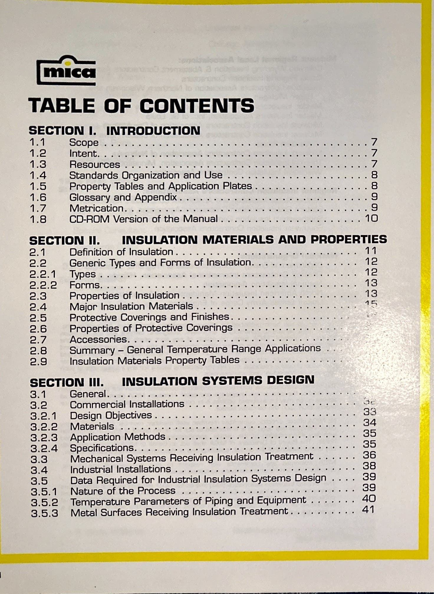
muca TABLE OF CONTENTS SECTION 1.
INTRODUCTION 1.1 1.4 1.7 Scope Intent.
.
.
Resources .
Standards Organization and I-Jse Property Tables and Application Plates .
.
Glossary and Appendix .
.
Metrication CD-ROM Version of the Manual .
INSULATION MATERIALS AND PROPERTIES SECTION II.
2.2 2.2.1 2.2.2 2.3 2.4 2.7 2.8 Definition of Insulation Generic Types and Forms of Insulation.
.
Types Forms Properties of Insulation .
Major Insulation Materials Protective Coverings and Finishes.
.
Properties of Protective Coverings Accessories Summary — General Temperature Range Applications Insulation Materials Property Tables .
SECTION Ill.
INSULATION SYSTEMS DESIGN 3.2 3.2.1 3.2.2 3.2.3 3.2.4 3.3 8.5 3.5.1 3.5.2 3.5.a General Commercial Installations Design Objectives Materials Application Methods Specifications Mechanical Systems Receiving Industrial Installations Insulation Treatment Data Required for Industrial Insulation Systems Design Nature of the Process Temperature Parameters of Piping and Equipment Metal Surfaces Receiving Insulation Treatment .
.
.
11 12 18 18 33 34 85 35 36 88 89 89 40
Page 8
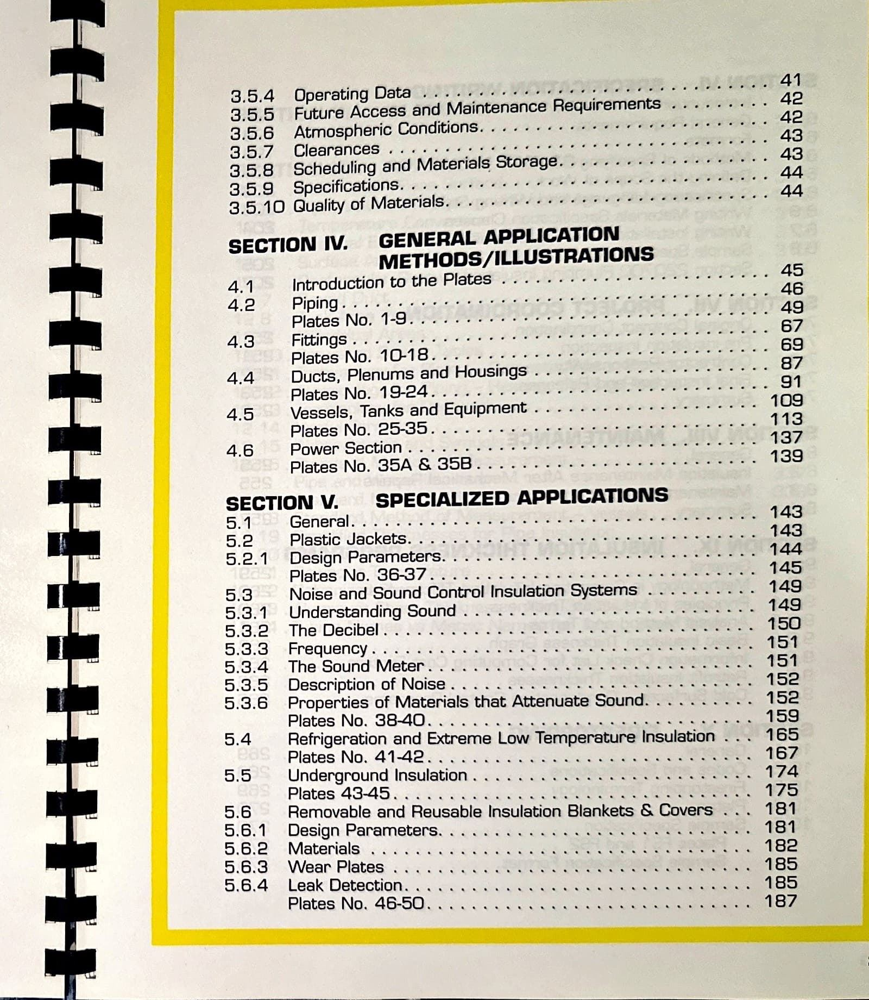
3.5.4 3.5.5 3.5.6 3.5.7 3.5.8 3.5.g Operating Data Future Access and Maintenance Requirements Atmospheric Conditions Clearances Scheduling and Materials Storage.
Specifications 3.5.10 Ouality of Materials SECTION lv.
GENERAL APPLICATION METHODS/ILLUSTRATIONS 4.2 4.4 4.5 4.6 Introduction to the Plates Piping .
Plates No.
1-9.
Fittings .
Plates No.
10-18.
Ducts, Plenums and Housings Plates No.
19-24.
Vessels, Tanks and Equipment .
Plates No.
25-35.
Power Section .
.
.
.
Plates No.
35A & 35B .
SECTION V.
General.
SPECIALIZED APPLICATIONS 5.2.1 5.3 5.8.1 5.8.2 5.3.3 5.3.4 5.3.5 5.3.6 5.5 5.6 5.6.1 5.6.2 5.6.3 5.6.4 Plastic Jackets.
Design Parameters.
.
Plates No.
86-87.
.
Noise and Sound Control Insulation Systems Understanding Sound The Decibel Frequency .
.
The Sound Meter Description of Noise .
Properties of Materials that Attenuate Sound.
Plates No.
38-40.
Refrigeration and Extreme Low Temperature Insulation Plates No.
41-42 I-Jnderground Insulation Plates 4345 Removable and Reusable Insulation Blankets & Covers Design Parameters.
Materials Wear Plates Leak Detection.
.
Plates No.
46-50.
42 42 44 45 46 49 67 69 87 109 113 137 139 143 143 144 145 149 149 150 151 151 152 152 159 165 167 174 175 181 181 182 185 185 187
Page 9
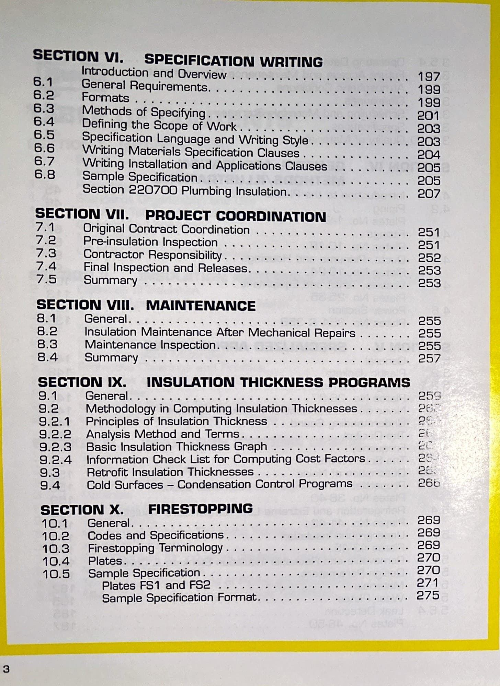
SECTION VI.
SPECIFICATION WRITING Introduction and Overview General Requirements 6.3 6.4 6.6 6.7 6.8 Formats Methods of Specifying .
.
.
Defining the Scope of Work Specification Language and Writing Style .
Writing Materials Specification Clauses Writing Installation and Applications Clauses Sample Specification Section 220700 Plumbing Insulation SECTION VII.
PROJECT COORDINATION Original Contract Coordination Pre-insulation Inspection Contractor Responsibility .
7.4 Final Inspection and Releases.
.
Summary SECTION VIII.
MAINTENANCE General 8.8 8.4 Insulation Maintenance After Mechanical Repairs Maintenance Inspection Summary SECTION IX.
INSULATION THICKNESS PROGRAMS 9.2 9.2.1 9.2.2 9.2.a 9.2.4 9.3 9.4 General.
Methodology in Computing Insulation Thicknesses Principles of Insulation Thickness Analysis Method and Terms.
.
.
.
Basic Insulation Thickness Graph Information Check List for Computing Cost Factors .
.
Retrofit Insulation Thicknesses Cold Surfaces — Condensation Control Programs SECTION X.
FIRESTOPPING 10.1 10.2 10.3 10.4 10.5 General.
Codes and Specifications.
.
Firestopping Terminology Plates.
.
.
.
Sample Specification .
.
Plates FSI and FS2 Sample Specification Format.
197 199 199 201 208 208 204 205 205 207 251 251 252 258 258 255 255 255 257 259 260 269 269 269 270 270 271 275
Page 10
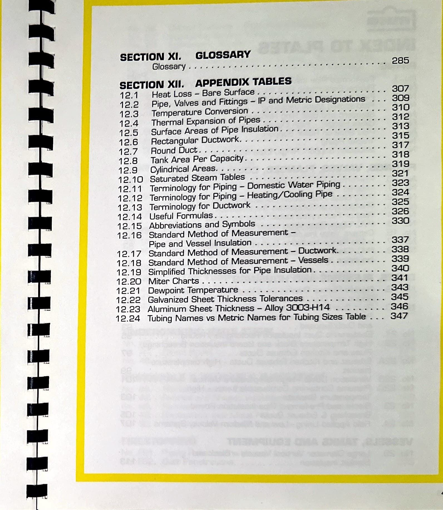
SECTION GLOSSARY Glossary .
SECTION APPENDIX TABLES 12.1 12.2 12.3 12.4 12.5 12.6 12.7 12.8 12.9 12.10 12.11 12.12 12.13 12.14 12.15 12.16 12.17 12.18 12.19 12.20 12.21 12.22 12.23 12.24 Heat Loss Bare Surface Pipe, Valves and Fittings — IP and Metric Designations Temperature Conversion .
Thermal Expansion of Pipes .
Surface Areas of Pipe Insulation .
Rectangular Ductwork.
Round Duct Tank Area Per Capacity.
Cylindrical Areas.
.
Saturated Steam Tables Terminology for Piping — Domestic Water Piping Terminology for Piping — Heating/Cooling Pipe Terminology for Ductwork Useful Formulas.
Abbreviations and Symbols Standard Method of Measurement — Pipe and Vessel Insulation Standard Method of Measurement — Ductwork.
Standard Method of Measurement — Vessels Simplified Thicknesses for Pipe Insulation.
.
Miter Charts .
Dewpoint Temperature Galvanized Sheet Thickness Tolerances Aluminum Sheet Thickness — Alloy 3003+114 Tubing Names vs Metric Names for Tubing Sizes Table 285 307 309 310 312 313 315 317 318 319 321 323 324 325 326 330 337 338 339 340 341 343 345 346 347
Page 11
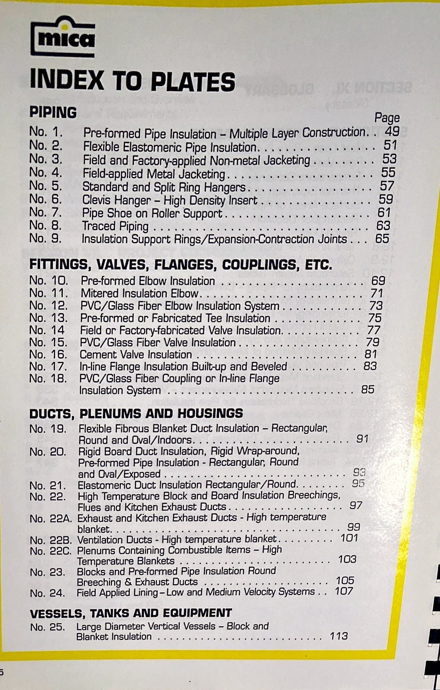
mra INDEX TO PLATES PIPING No.
2 No.
3 NO.
6 NO.
7 No.
8 Page Pre-formed Pipe Insulation - Multiple Layer Construction..
Flexible Elastomeric Pipe Insulation Field and Factory-applied Non-metal Jacketing Field-applied Metal Jacketing Standard and Split Ring Hangers 4.
No.
5.
No.
9 Clevis Hanger - High Density Insert Pipe Shoe on Roller Support Traced Piping Insulation Support Rings/ExpansionContraction Joints .
FITTINGS, VALVES, FLANGES, COUPLINGS, ETC No.
No.
No.
No.
No.
No.
No.
No.
IO.
11.
12.
18.
14 15.
16.
17.
1B.
Pre-formed Elbow Insulation Mitered Insulation Elbow PVC/Glass Fiber Elbow Insulation System Pre-formed or Fabricated Tee Insulation Field or Factory-fabricated Valve Insulation PVC/Glass Fiber Valve Insulation Cement Valve Insulation In-line Flange Insulation Built-up and Beveled PVC/Glass Fiber Coupling or In-line Flange Insulation System DUCTS, PLENUMS AND HOUSINGS 49 51 58 55 57 59 61 63 65 69 71 73 75 77 79 81 88 85 91 No.
19.
No.
20.
21.
No.
No.
22.
No.
22A.
No.
22B.
No.
22C.
28.
No.
24.
No.
Flexible Fibrous Blanket Duct Insulation - Rectangular, Round and Oval/lndoors.
Rigid Board Duct Insulation, Rigid Wrap-around, Pre-formed Pipe Insulation - Rectangular, Round and Oval/Exposed Elastomeric Duct Insulation Rectangular/Round.
High Temperature Block and Board Insulation Breechings, Flues and Kitchen Exhaust Ducts .
Exhaust and Kitchen Exhaust Ducts - High temperature 95 99 101 blanket.
Ventilation Ducts - High temperature blanket.
Plenums Containing Combustible Items — High Temperature Blankets Blocks and Pre-formed Pipe Insulation Round Breeching & Exhaust Ducts Field Applied Lining—Low and Medium Velocib/ Systems .
.
VESSELS, TANKS AND EQUIPMENT No.
25.
Large Diameter Vertical Vessels — Block and Blanket Insulation 103 105 107 118
Page 12
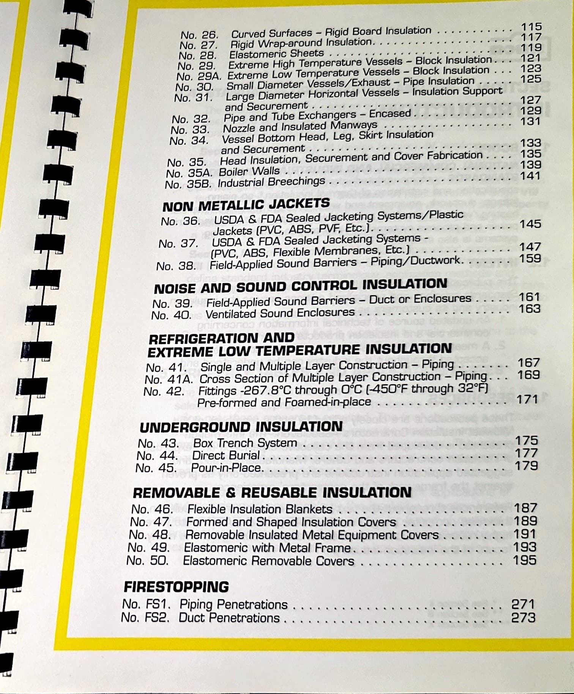
No.
26.
Curved Surfaces — Rigid Board Insulation No.
27.
Rigid Wrap-around Insulation.
No.
2B.
Elastomeric Sheets No.
29.
Extreme High Temperature Vessels Block Insulation.
121 No.
29A.
Extreme Low Temperature Vessels — Block Insulation .
No.
30.
Small Diameter Vessels/ Exhaust — Pipe Insulation No.
31.
Large Diameter Horizontal Vessels — Insulation Support and Securement .
No.
32.
Pipe and Tube Exchangers — Encased .
No.
33.
Nozzle and Insulated Manways No.
34.
Vessel Bottom Head, Leg, Skirt Insulation and Securement .
No.
35.
Head Insulation, Securement and Cover Fabrication .
No.
35A.
Boiler Walls No.
35B.
Industrial Breechings .
N0N METALLIC JACKETS No.
36.
USDA & FDA Sealed Jacketing Systems/Plastic Jackets (PVC, ABS, PVF, Etc.).
No.
37.
USDA & FDA Sealed Jacketing Systems - (PVC, ABS, Flexible Membranes, Etc.) No.
38.
Field-Applied Sound Barriers — Piping/Ductwork.
ruo:sE AND SOUND CONTROL INSULATION No.
89.
Field-Applied Sound Barriers — Duct or Enclosures No.
40.
Ventilated Sound Enclosures .
REFRIGERATION AND EXTREME LOW TEMPERATURE INSULATION No.
41.
Single and Multiple Layer Construction — Piping .
No.
4 IA.
Cross Section of Multiple Layer Construction — Piping.
No.
42.
Fittings -267.80C through OOC (4500F through 320FJ Pre-formed and Foamed-in-place UNDERGROUND INSULATION No.
48.
Box Trench System No.
44.
Direct Burial .
No.
45.
Pour-in-Place.
.
REMOVABLE & REUSABLE INSULATION No.
46.
Flexible Insulation Blankets No.
47.
Formed and Shaped Insulation Covers No.
48.
Removable Insulated Metal Equipment Covers No.
49.
Elastomeric with Metal Frame No.
50.
Elastomeric Removable Covers FIRESTOPPING No.
FSI.
Piping Penetrations No.
FS2.
Duct Penetrations 115 117 119 123 125 127 129 131 133 135 139 141 145 147 159 161 163 167 169 171 175 177 179 187 189 191 193 195 271 273